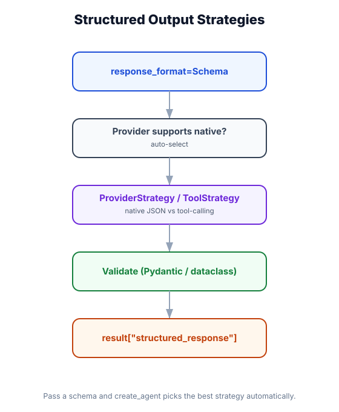

Structured Output
What you'll learn: How to force an agent to return validated JSON matching a Pydantic schema, when to use ToolStrategy vs. ProviderStrategy, and how to handle structured outputs in practice — including nested schemas, optional fields, and error recovery.

↗ Open full size · ⬇ Edit in Excalidraw — labels use real LangChain classes.
Without structured output, asking a model for data is like asking a chef to describe a dish — you get a paragraph of prose that you then have to parse. With structured output, you hand the chef a form: "Fill in: dish name, ingredients list (comma-separated), prep time (minutes), spice level (1–5)." You always get back exactly what you asked for in exactly the format you need.
Why Structured Output?
Agents generate text by default. But real applications need typed, parseable data: API responses, database records, UI components, downstream pipeline inputs. Without structured output, you write fragile regex parsers or hope the model follows instructions. With it, you get validated Python objects directly.
❌ Without Structured Output
- Model returns free-text prose
- You parse it with regex or JSON.loads
- Fields may be missing or misspelled
- Hard to validate or unit-test
- Breaks if model changes phrasing
✅ With Structured Output
- Returns a validated Pydantic object
- Type hints → automatic validation
- Guarantees all required fields
- Easily serializable to JSON/dict
- Integrates with databases and APIs
The Two Strategies
LangChain supports two ways to enforce structured output. Click a strategy to learn more:
ToolStrategy adds a special "final answer" tool to the agent. Instead of generating a text response, the model is required to call this tool with arguments matching your schema. This works with any model that supports tool use.
Best for: OpenAI, Anthropic, Google, and other major providers. Most compatible option.
How it works internally: LangChain registers a synthetic tool called something like FinalResponse whose input schema is your Pydantic model. The model must call it (instead of returning text) to "answer."
ProviderStrategy uses each provider's native structured output / JSON mode API feature (e.g., OpenAI's response_format, Anthropic's tool use with forced tool choice). May produce more reliable output for providers that natively support it.
Best for: OpenAI gpt-4o and later, where native JSON schema enforcement gives the best results. Not available on all models.
Gotcha: Falls back to ToolStrategy automatically if the model doesn't support native structured output — so ToolStrategy is usually the safer default.
Basic Example: Agent with Structured Output
from langchain.agents import create_agent
from langchain.chat_models import init_chat_model
from langchain.tools import tool
from pydantic import BaseModel, Field
from langchain_core.messages import HumanMessage
# ── 1. Define the output schema ───────────────────────────────────────────────
class ProductAnalysis(BaseModel):
"""Analysis of a product from a description."""
product_name: str = Field(description="Name of the product")
category: str = Field(description="Product category (e.g., 'Electronics', 'Clothing')")
estimated_price_usd: float = Field(description="Estimated retail price in USD", ge=0)
key_features: list[str] = Field(description="3-5 key product features")
target_audience: str = Field(description="Primary target audience")
sentiment: str = Field(description="Overall sentiment: 'positive', 'neutral', or 'negative'")
# ── 2. Optional: a tool to fetch product info ─────────────────────────────────
@tool
def fetch_product_details(product_id: str) -> str:
"""Fetch product details from the catalog.
Args:
product_id: The product identifier.
"""
# In production, this would query a real database
return (
"Product: Ultra-Slim Wireless Earbuds Pro. "
"These premium noise-cancelling earbuds offer 30-hour battery life, "
"IP68 waterproofing, and spatial audio. "
"Target market: audiophiles and commuters. "
"MSRP: $199."
)
# ── 3. Create agent with structured output ────────────────────────────────────
agent = create_agent(
model=init_chat_model("openai:gpt-4o", temperature=0),
tools=[fetch_product_details],
structured_output=ProductAnalysis, # ← the magic parameter
system_prompt=(
"You are a product analyst. When asked about a product, "
"fetch its details and return a structured analysis."
),
)
# ── 4. Invoke — returns a ProductAnalysis object ──────────────────────────────
result = agent.invoke({
"messages": [HumanMessage("Analyze product ID: BT-EARBUDS-PRO")]
})
# The final message's content is already a validated Pydantic object!
analysis: ProductAnalysis = result["structured_output"]
print(f"Product: {analysis.product_name}")
print(f"Price: ${analysis.estimated_price_usd}")
print(f"Features: {', '.join(analysis.key_features)}")
print(f"Audience: {analysis.target_audience}")
# Serialize to dict/JSON easily
data = analysis.model_dump()
print(data) # {"product_name": "...", "category": "...", ...}Nested Schemas and Advanced Field Types
from pydantic import BaseModel, Field
from typing import Optional, Literal
from enum import Enum
# ── Nested models work just fine ───────────────────────────────────────────────
class ContactInfo(BaseModel):
email: str
phone: Optional[str] = None # Optional field
preferred_contact: Literal["email", "phone"] = "email" # Constrained string
class Priority(str, Enum):
LOW = "low"
MEDIUM = "medium"
HIGH = "high"
URGENT = "urgent"
class SupportTicket(BaseModel):
"""A structured support ticket created from a customer message."""
ticket_id: str = Field(description="Generated ticket ID, format: TKT-XXXXXX")
title: str = Field(description="Brief, actionable title (max 60 chars)", max_length=60)
description: str = Field(description="Detailed issue description")
category: Literal["billing", "technical", "account", "other"]
priority: Priority = Field(default=Priority.MEDIUM)
affected_feature: Optional[str] = Field(
default=None,
description="Which product feature is affected, if applicable"
)
customer: ContactInfo
requires_follow_up: bool = Field(
description="True if this ticket needs a human review"
)
estimated_resolution_hours: int = Field(
description="Estimated hours to resolve",
ge=1, le=720 # 1 hour to 30 days
)
tags: list[str] = Field(default_factory=list, description="Relevant tags")
# Use it with create_agent(structured_output=SupportTicket)
# The agent will always return a valid SupportTicket object
# ── Access nested fields ───────────────────────────────────────────────────────
# ticket: SupportTicket = result["structured_output"]
# print(ticket.customer.email)
# print(ticket.priority.value) # "high", "low", etc.
# print(ticket.requires_follow_up) # always a bool, never a string
Choosing a Strategy Explicitly
from langchain.agents import create_agent
from langchain.chat_models import init_chat_model
from langchain.agents.structured_output import ToolStrategy, ProviderStrategy
from pydantic import BaseModel
class Answer(BaseModel):
content: str
confidence: float # 0.0 to 1.0
sources: list[str]
# ── Default: LangChain picks the best strategy automatically ──────────────────
agent_auto = create_agent(
model="openai:gpt-4o",
structured_output=Answer, # auto-selects ProviderStrategy for gpt-4o
)
# ── Explicit ToolStrategy — most compatible ───────────────────────────────────
agent_tool = create_agent(
model="anthropic:claude-sonnet-4-6",
structured_output=ToolStrategy(Answer), # explicit
)
# ── Explicit ProviderStrategy — uses provider's native JSON mode ──────────────
agent_provider = create_agent(
model="openai:gpt-4o",
structured_output=ProviderStrategy(Answer, strict=True), # strict=True on OpenAI
)
# ── With response_format (lower-level API) ────────────────────────────────────
# This works at the model level, not the agent level:
from langchain.chat_models import init_chat_model
model = init_chat_model(
"openai:gpt-4o",
response_format={"type": "json_schema", "json_schema": {"name": "answer", "schema": Answer.model_json_schema()}}
)
When using structured_output, the model must complete the full response before it can be validated and returned as a Pydantic object. You can stream the raw tokens, but you won't get a partial Pydantic object — just partial JSON strings. If you need both streaming and structure, consider streaming the tokens and parsing at the end, or using streaming with stream_mode="messages" and parsing the final message.
If you use tools and structured output together, the agent first uses tools normally (returning plain tool results), and only enforces the schema on its final response. Mid-loop "reasoning" messages are still free-form text. Only result["structured_output"] is guaranteed to be the validated Pydantic object.
Structured Output at the Model Level (without an agent)
You don't need an agent to use structured output. If you just want structured responses from a model directly:
from langchain.chat_models import init_chat_model
from langchain_core.messages import HumanMessage
from pydantic import BaseModel
class Sentiment(BaseModel):
label: str # "positive", "negative", "neutral"
score: float # 0.0 to 1.0
reasoning: str # brief explanation
model = init_chat_model("openai:gpt-4o", temperature=0)
# .with_structured_output() wraps any model
structured_model = model.with_structured_output(Sentiment)
result: Sentiment = structured_model.invoke([
HumanMessage("Analyze: 'This product exceeded all my expectations!'")
])
print(result.label) # "positive"
print(result.score) # 0.97
print(result.reasoning) # "The phrase 'exceeded all my expectations' strongly indicates..."
# Works with any provider that supports tool use or JSON mode
structured_anthropic = init_chat_model("anthropic:claude-sonnet-4-6").with_structured_output(Sentiment)
Real-World Use Case
📄 Document Intelligence Pipeline
A legal firm's document processing agent reads incoming contracts and returns a structured ContractSummary with fields: parties (list), effective_date, termination_date, key_obligations (nested list), risk_flags (list), requires_attorney_review (bool), and jurisdiction. Each ContractSummary is directly inserted into a database row, no parsing needed. When requires_attorney_review is True, an alert is automatically triggered. Because the schema is Pydantic, a unit test can validate the agent returns the right structure without calling the API.
Use structured_output=MyModel in create_agent() to get validated Pydantic objects back. Define schemas with Pydantic v2 — use Field(description=...) so the model knows what to put in each field. ToolStrategy works everywhere; ProviderStrategy gives better results on OpenAI. For model-level structured output without an agent, use model.with_structured_output(MyModel).